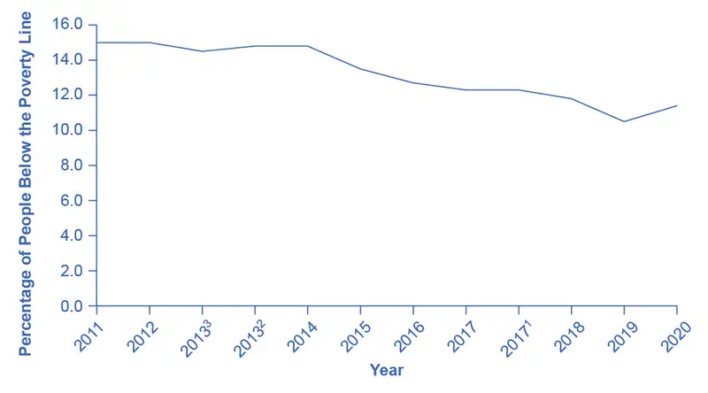
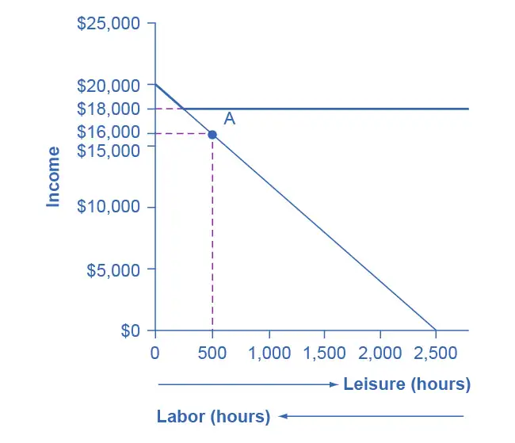
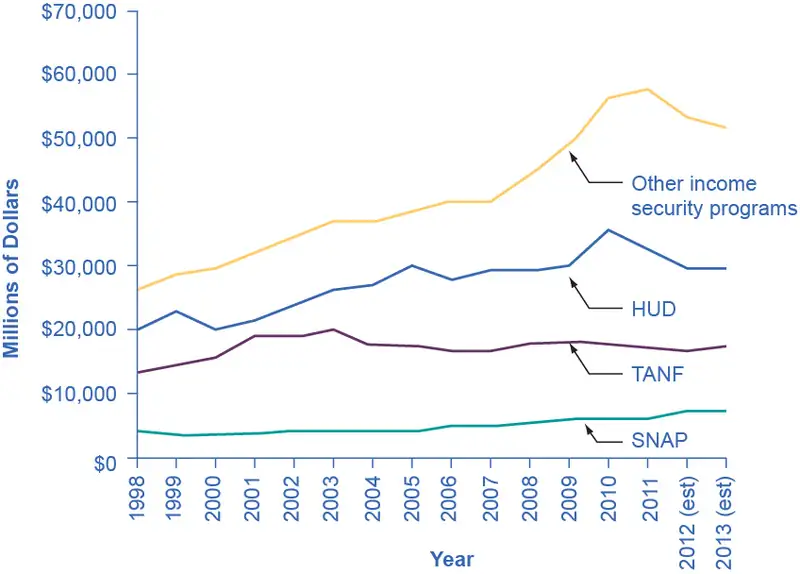
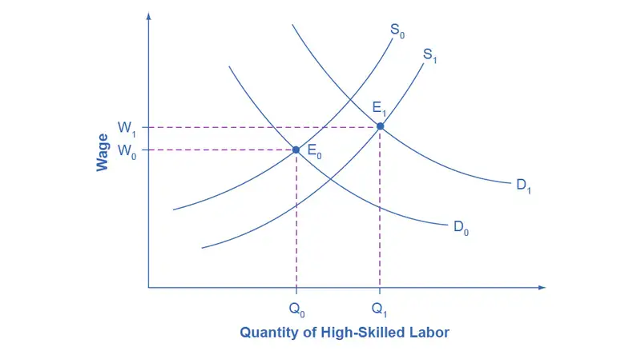
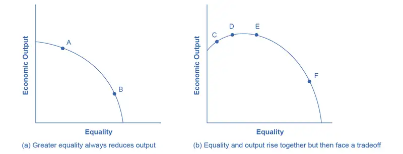
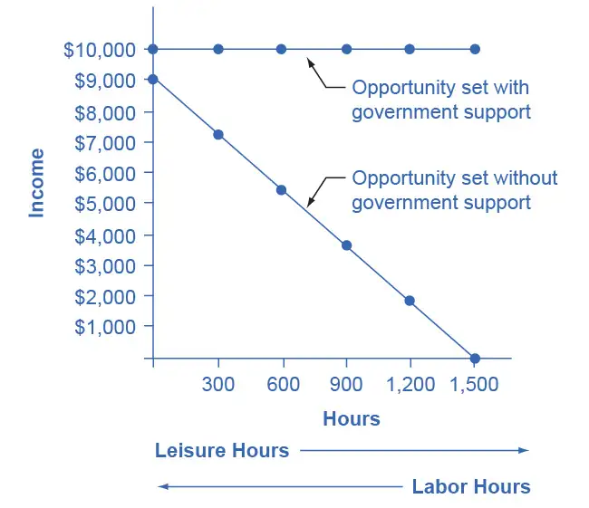
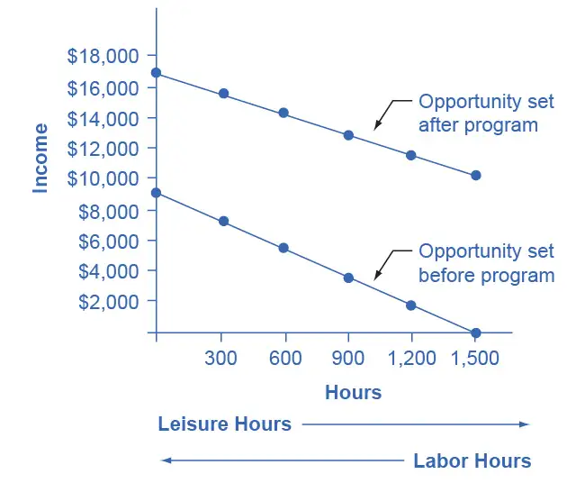

Chapter 15: Poverty and Economic Inequality¶
Introduction¶
Bring It Home: Occupy Wall Street
In September 2011, a group of protesters gathered in Zuccotti Park in New York City to decry what they perceived as increasing social and economic inequality in the United States. Calling their protest “Occupy Wall Street,” they argued that the concentration of wealth among the richest 1% in the United States was both economically unsustainable and inequitable, and needed to be changed. The protest then spread to other major cities, and the Occupy movement was born.
Why were people so upset? How much wealth is concentrated among the top 1% in our society? How did they acquire so much wealth? These are very real, very important questions in the United States now, and this chapter on poverty and economic inequality will help us address the causes behind this sentiment.
Chapter Outline: Introduction to Poverty and Economic Inequality
In this chapter, you will learn about:
- Drawing the Poverty Line
- The Poverty Trap
- The Safety Net
- Income Inequality: Measurement and Causes
- Government Policies to Reduce Income Inequality
The labor markets that determine the pay that workers receive do not take into account how much income a family needs for food, shelter, clothing, and health care. Market forces do not worry about what happens to families when a major local employer goes out of business. Market forces do not take time to contemplate whether those who are earning higher incomes should pay an even higher share of taxes.
However, labor markets do create considerable income inequalities. In 2020, the median American household income was $67,521 (the median is the level where half of all families had more than that level and half had less). For family households, the median was $86,372; for non-family households, it was $40,464. The Census Bureau also reported that in 2020, there were 37.2 million people living in poverty, representing 11.4% of the population. Think about a family of three—perhaps a single mother with two children—attempting to pay for the basics of life on perhaps $17,916 per year. After paying for rent, healthcare, clothing, and transportation, such a family might have $6,000 to spend on food. Spread over 365 days, the food budget for the entire family would be about $17 per day. To put this in perspective, most cities have restaurants where $17 will buy you an appetizer for one.
This chapter explores how the U.S. government defines poverty, the balance between assisting the poor without discouraging work, and how federal antipoverty programs work. It also discusses income inequality—how economists measure inequality, why inequality has changed in recent decades, the range of possible government policies to reduce inequality, and the danger of a tradeoff that too great a reduction in inequality may reduce incentives for producing output.
15.1 Drawing the Poverty Line¶
Learning Objectives
By the end of this section, you will be able to:
- Explain economic inequality and how the poverty line is determined
- Analyze the U.S. poverty rate over time, noting its prevalence among different groups of citizens
Comparisons of high and low incomes raise two different issues: economic inequality and poverty. Poverty is measured by the number of people who fall below a certain level of income—called the poverty line—that defines the income one needs for a basic standard of living. Measures of inequality compare the shares of a nation's income or wealth that comparable groups receive. A common inequality measure is Income inequality. One of numerous ways to look at income inequality is to compare the share of income that the top 10% receive to the share of income that the bottom 10% receive.
In the United States, the official definition of the poverty line traces back to a single person: Mollie Orshansky. In 1963, Orshansky, who was working for the Social Security Administration, published an article called “Children of the Poor” in a highly useful and dry-as-dust publication called the Social Security Bulletin. Orshansky’s idea was to define a poverty line based on the cost of a healthy diet.
Her previous job had been at the U.S. Department of Agriculture, where she had worked in an agency called the Bureau of Home Economics and Human Nutrition. One task of this bureau had been to calculate how much it would cost to feed a nutritionally adequate diet to a family. Orshansky found that the average family spent one-third of its income on food. She then proposed that the poverty line be the amount one requires to buy a nutritionally adequate diet, given the size of the family, multiplied by three.
The current U.S. poverty line is essentially the same as the Orshansky poverty line, although the government adjusts the dollar amounts to represent the same buying power over time. The U.S. poverty line in 2021 ranged from $12,880 for a single individual to $26,500 for a household of four people.
Figure 15.2 shows the U.S. poverty rate over time; that is, the percentage of the population below the poverty line in any given year. The poverty rate declined through the 1960s, rose in the early 1980s and early 1990s, but seems to have been slightly lower since the mid-1990s. However, in no year in the last six decades has the poverty rate been less than 10.5% of the U.S. population—that is, at best almost one American in nine is below the poverty line. In recent years, the poverty rate peaked at 15.1% in 2010, before dropping to 10.5% in 2019. Table 15.1 compares poverty rates for different groups in 2011. As you will see when we delve further into these numbers, poverty rates are relatively low for White people, for the elderly, for the well-educated, and for male-headed households. Poverty rates for females, Hispanic people, and African Americans are much higher than for White people. While Hispanic people and African Americans have a higher percentage of individuals living in poverty than others, most people in the United States living below the poverty line are White people.
Link It Up
Visit this website for more information on U.S. poverty.

Table 15.1 Poverty Rates by Group, 2020
| Group | Poverty Rate |
|---|---|
| Females | 12.6% |
| Males | 10.2% |
| White (Non-Hispanic) | 8.2% |
| Black | 19.5% |
| Hispanic | 17.0% |
| Under age 18 | 16.1% |
| Ages 18–64 | 10.4% |
| Ages 65+ | 9.0% |
The concept of a poverty line raises many tricky questions. In a vast country like the United States, should there be a national poverty line? After all, according to the Federal Register, the median household income for a family of four was $109,113 in New Jersey and $59,701 in Mississippi in 2017, and prices of some basic goods like housing are quite different between states. The poverty line is based on cash income, which means it does not account for government programs that provide non-cash assistance such as Medicaid (health care for low-income individuals and families) and food aid. Also, low-income families can qualify for federal housing assistance. (We will discuss these and other government aid programs in detail later in this chapter.)
Should the government adjust the poverty line to account for the value of such programs? Many economists and policymakers wonder whether we should rethink the concept of what poverty means in the twenty-first century. The following Clear It Up feature explains the poverty lines set by the World Bank for low-income countries around the world.
Clear It Up: How do economists measure poverty in low-income countries?
The World Bank sets two poverty lines for low-income countries around the world. One poverty line is set at an income of $1.90/day per person. The other is at $3.20/day. By comparison, the U.S. 2015 poverty line of $20,090 annually for a family of three works out to $18.35 per person per day.
Clearly, many people around the world are far poorer than Americans, as Table 15.2 shows. China and India both have more than a billion people; Nigeria is the most populous country in Africa; and Egypt is the most populous country in the Middle East. In all four of those countries, in the mid-2000s, a substantial share of the population subsisted on less than $2/day. About half the world lives on less than $2.50 a day, and 80 percent of the world lives on less than $10 per day. (Of course, the cost of food, clothing, and shelter in those countries can be very different from those costs in the United States, so the $2 and $2.50 figures may mean greater purchasing power than they would in the United States.)
Table 15.2 Poverty Lines for Low-Income Countries, mid-2000s (Source: https://datatopics.worldbank.org/world-development-indicators/themes/poverty-and-inequality.html)
| Country | Year | Percentage of Population with Income Less Than $1.90/Day/Person | Percentage of Population with Income Less Than $3.20/Day/Person |
|---|---|---|---|
| Brazil | 2019 | 4.6% | 9.1% |
| China | 2017 | 0.5% | 5.4% |
| Egypt | 2017 | 3.8% | 28.9% |
| India | 2011 | 22.5% | 61.7% |
| Mexico | 2018 | 1.7% | 6.5% |
| Nigeria | 2018 | 39.1% | 71.0% |
Any poverty line will be somewhat arbitrary, and it is useful to have a poverty line whose basic definition does not change much over time. If Congress voted every few years to redefine poverty, then it would be difficult to compare rates over time. After all, would a lower poverty rate change the definition, or is it the case that people were actually better off? Government statisticians at the U.S. Census Bureau have ongoing research programs to address questions like these.
15.2 The Poverty Trap¶
Learning Objectives
By the end of this section, you will be able to:
- Explain the poverty trap, noting how government programs impact it
- Identify potential issues in government programs that seek to reduce poverty
- Calculate a budget constraint line that represents the poverty trap
Can you give people too much help, or the wrong kind of help? When people are provided with food, shelter, healthcare, income, and other necessities, assistance may reduce their incentive to work, particularly if their work is likely to offer low wages and reduce government assistance. Consider a program to fight poverty that works in this reasonable-sounding manner: the government provides assistance to the those who need it, but as the recipients earn income to support themselves, the government reduces the level of assistance it provides. With such a program, every time a person earns $100, they lose $100 in government support. As a result, the person experiences no net gain for working. Economists call this problem the poverty trap.
Consider the situation a single-parent family faces. Figure 15.3 illustrates a single mother (earning $8 an hour) with two children. First, consider the labor-leisure budget constraint that this family faces in a situation without government assistance. On the horizontal axis is hours of leisure (or time spent with family responsibilities) increasing in quantity from left to right. Also on the horizontal axis is the number of hours at paid work, going from zero hours on the right to the maximum of 2,500 hours on the left. On the vertical axis is the amount of income per year rising from low to higher amounts of income. The budget constraint line shows that at zero hours of leisure and 2,500 hours of work, the maximum amount of income is $20,000 ($8 × 2,500 hours). At the other extreme of the budget constraint line, an individual would work zero hours, earn zero income, but enjoy 2,500 hours of leisure. At point A on the budget constraint line, by working 40 hours a week, 50 weeks a year, the utility-maximizing choice is to work a total of 2,000 hours per year and earn $16,000.
Now suppose that a government antipoverty program guarantees every family with a single mother and two children $18,000 in income. This is represented on the graph by a horizontal line at $18,000. With this program, each time the mother earns $1,000, the government will deduct $1,000 of its support. Table 15.3 shows what will happen at each combination of work and government support.

Table 15.3 Total Income at Various Combinations of Work and Support
| Amount Worked (hours) | Total Earnings | Government Support | Total Income |
|---|---|---|---|
| 0 | 0 | $18,000 | $18,000 |
| 500 | $4,000 | $14,000 | $18,000 |
| 1,000 | $8,000 | $10,000 | $18,000 |
| 1,500 | $12,000 | $6,000 | $18,000 |
| 2,000 | $16,000 | $2,000 | $18,000 |
| 2,500 | $20,000 | 0 | $20,000 |
The new budget line, with the antipoverty program in place, is the horizontal and heavy line that is flat at $18,000. If the mother does not work at all, she receives $18,000, all from the government. If she works full time, giving up 40 hours per week with her children, she still ends up with $18,000 at the end of the year. Only if she works 2,300 hours in the year—which is an average of 44 hours per week for 50 weeks a year—does household income rise to $18,400. Even in this case, all of her year’s work means that household income rises by only $400 over the income she would receive if she did not work at all. She would need to work 50 hours a week to reach $20,800.
The poverty trap is even stronger than this simplified example shows, because a working mother will have extra expenses like clothing, transportation, and child care that a nonworking mother will not face, making the economic gains from working even smaller. Moreover, those who do not work fail to build up job experience and contacts, which makes working in the future even less likely.
To reduce the poverty trap the government could design an antipoverty program so that, instead of reducing government payments by $1 for every $1 earned, the government would reduce payments by some smaller amount instead. Imposing requirements for work as a condition of receiving benefits and setting a time limit on benefits can also reduce the harshness of the poverty trap.
Figure 15.4 illustrates a government program that guarantees $18,000 in income, even for those who do not work at all, but then reduces this amount by 50 cents for each $1 earned. The new, higher budget line in Figure 15.4 shows that, with this program, additional hours of work will bring some economic gain. Because of the reduction in government income when an individual works, an individual earning $8.00 will really net only $4.00 per hour. The vertical intercept of this higher budget constraint line is at $28,000 ($18,000 + 2,500 hours × $4.00 = $28,000). The horizontal intercept is at the point on the graph where $18,000 and 2500 hours of leisure is set. Table 15.4 shows the total income differences with various choices of labor and leisure.
However, this type of program raises other issues. First, even if it does not eliminate the incentive to work by reducing government payments by $1 for every $1 earned, enacting such a program may still reduce the incentive to work. At least some people who would be working 2,000 hours each year without this program might decide to work fewer hours but still end up with more income—that is, their choice on the new budget line would be like S, above and to the right of the original choice P. Of course, others may choose a point like R, which involves the same amount of work as P, or even a point to the left of R that involves more work.
The second major issue is that when the government phases out its support payments more slowly, the antipoverty program costs more money. Still, it may be preferable in the long run to spend more money on a program that retains a greater incentive to work, rather than spending less money on a program that nearly eliminates any gains from working.
![The graph shows a downward sloping line that extends from $28,000 on the y-axis to $18,000 on the y-axis (from 0 to 2,500 on the x-axis). Two points R and S appear on the line. Another line starts at (0, $20,000) and ends at (2,500, 0). A dashed plum line extends horizontally from $18,000 on the y-axis and meets with the vertical line extending from 2,500 on the x-axis. Another dashed plum line extends from $16,000 on the y-axis and intersects with the vertical line extending from 500 on the x-axis at point P. Beneath the x-axis is an arrow pointing to the right indicating leisure (hours) and an arrow pointing to the left indicating labor (hours).](img/cnx-econ3e-c14-003.webp)
Table 15.4 The Labor-Leisure Tradeoff with Assistance Reduced by 50 Cents for Every Dollar Earned
| Amount Worked (hours) | Total Earnings | Government Support | Total Income |
|---|---|---|---|
| 0 | 0 | $18,000 | $18,000 |
| 500 | $4,000 | $16,000 | $20,000 |
| 1,000 | $8,000 | $14,000 | $22,000 |
| 1,500 | $12,000 | $12,000 | $24,000 |
| 2,000 | $16,000 | $10,000 | $26,000 |
| 2,500 | $20,000 | $8,000 | $28,000 |
The next module will consider a variety of government support programs focused specifically on people experiencing poverty, including welfare, SNAP (Supplemental Nutrition Assistance Program), Medicaid, and the earned income tax credit (EITC). Although these programs vary from state to state, it is generally a true statement that in many states from the 1960s into the 1980s, if poor people worked, their level of income barely rose—or did not rise at all—after factoring in the reduction in government support payments.
15.3 The Safety Net¶
Learning Objectives
By the end of this section, you will be able to:
- Identify the antipoverty government programs that comprise the safety net
- Explain the safety net programs' primary goals and how these programs have changed over time
- Discuss the complexities of these safety net programs and why they can be controversial
The U.S. government has implemented a number of programs to assist those below the poverty line and those who have incomes just above the poverty line. Such programs are called the safety net, to recognize that they offer some protection for those who find themselves without jobs or income.
Temporary Assistance for Needy Families¶
From the Great Depression until 1996, the United States’ most visible antipoverty program was Aid to Families with Dependent Children (AFDC), which provided cash payments to mothers with children who were below the poverty line. Many just called this program “welfare.” In 1996, Congress passed and President Bill Clinton signed into law the Personal Responsibility and Work Opportunity Reconciliation Act, more commonly called the “welfare reform act.” The new law replaced AFDC with Temporary Assistance for Needy Families (TANF).
Link It Up
Visit this website to watch a video of President Bill Clinton’s Welfare Reform speech.
TANF brought several dramatic changes in how welfare operated. Under the old AFDC program, states set the level of welfare benefits that they would pay to people experiencing poverty, and the federal government guaranteed it would chip in some of the money as well. The federal government’s welfare spending would rise or fall depending on the number of people in need, and on how each state set its own welfare contribution.
Under TANF, however, the federal government gives a fixed amount of money to each state. The state can then use the money for almost any program with an antipoverty component: for example, the state might use the money to give funds to families with low income, or to reduce teenage pregnancy, or even to raise the high school graduation rate. However, the federal government imposed two key requirements. First, if states are to keep receiving the TANF grants, they must impose work requirements so that most of those receiving TANF benefits are working (or attending school). Second, no one can receive TANF benefits with federal money for more than a total of five years over their lifetime. The old AFDC program had no such work requirements or time limits.
TANF attempts to avoid the poverty trap by requiring that welfare recipients work and by limiting the length of time they can receive benefits. In its first few years, the program was quite successful. The number of families receiving payments in 1995, the last year of AFDC, was 4.8 million. November 2020, according to the Congressional Research Service, the number of families receiving payments under TANF was 1.0 million—a decline of nearly 80%.
TANF benefits to poor families vary considerably across states. For example, again according to the Congressional Research Service, in July 2020 the highest monthly payment in New Hampshire to a single mother with one child was $862, while in Mississippi the highest monthly payment to that family was $146. In part, these payments reflect differences in states’ cost of living. As reported by the Department of Health and Human Services, in 1995 total spending on TANF was approximately $19 billion. Spending increased yearly through 2001, then it was roughly flat at approximately $26 billion until 2005, then it increased again through 2010, where it peaked at nearly $35 billion. It then decreased again to around $30 billion in 2020. When you take into account the effects of inflation, the decline is even greater. Moreover, there seemed little evidence that families were suffering a reduced standard of living as a result of TANF—although, on the other side, there was not much evidence that families had greatly improved their total levels of income, either.
The Earned Income Tax Credit (EITC)¶
The earned income tax credit (EITC), first passed in 1975, is a method of assisting the working poor through the tax system. The EITC is one of the largest assistance program for low-income groups, and as of December 2021, about 25 million eligible workers and families received about $60 billion in EITC. For the 2021 tax year, the earned income credit ranges from $1,502 to $6,728 depending on tax-filing status, income, and number of children. The average amount of EITC received nationwide was about $2,411. In 2021, for example, a single parent with two children would have received a tax credit of $5,980 up to a modest income level. The amount of the tax break increases with the amount of income earned, up to a point. The earned income tax credit has often been popular with both economists and the general public because of the way it effectively increases the payment received for work.
What about the danger of the poverty trap that every additional $1 earned will reduce government support payments by close to $1? To minimize this problem, the earned income tax credit is phased out slowly. For example, according to the Tax Policy Center, for a single-parent family with two children in 2013, the credit is not reduced at all (but neither is it increased) as earnings rise from $13,430 to $17,530. Then, for every $1 earned above $17,530, the amount received from the credit is reduced by 21.06 cents, until the credit phases out completely at an income level of $46,227.
Figure 15.5 illustrates that the earned income tax credits, child tax credits, and the TANF program all cost the federal government money—either in direct outlays or in loss of tax revenues. CTC stands for the government tax cuts for the child tax credit.
![This graph shows three lines, spending over time on the Earned Income Tax Credit (E I T C), the Child Tax Credit (C T C), and the Temporary Aid for Needy Families (T A N F) program. The y-axis shows billions of 2011 dollars, and x-axis measures years, from 1975 to 2016. The E I T C line begins at almost 0, and is generally flat until 1987, then it is upward-sloping, peaking at over 60 billion dollars in 2015. The C T C line begins in 1998 and increases very rapidly to 55 billion in 2006 and staying roughly in that range. T A N F is roughly constant at 20 billion from 1975 to 2016.](img/cnx-econ3e-c14-007.webp)
In recent years, the EITC has become a hugely expensive government program for providing income assistance to people below or near the poverty line, costing about $60 billion in 2021. In that year, the EITC provided benefits to about 25 million families and individuals and, on average, is worth about $2,411 per family (with children), according to the Tax Policy Center. One reason that the TANF law worked as well as it did is that the government greatly expanded EITC in the late 1980s and again in the early 1990s, which increased the returns to work for low-income Americans.
Supplemental Nutrition Assistance Program (SNAP)¶
Often called “food stamps,” Supplemental Nutrition Assistance Program (SNAP) is a federally funded program, started in 1964, in which each month people receive a card like a debit card that they can use to buy food. The amount of food aid for which a household is eligible varies by income, number of children, and other factors but, in general, households are expected to spend about 30% of their own net income on food, and if 30% of their net income is not enough to purchase a nutritionally adequate diet, then those households are eligible for SNAP.
SNAP can contribute to the poverty trap. For every $100 earned, the government assumes that a family can spend $30 more for food, and thus reduces its eligibility for food aid by $30. This decreased benefit is not a complete disincentive to work—but combined with how other programs reduce benefits as income increases, it adds to the problem. SNAP, however, does try to address the poverty trap with its own set of work requirements and time limits.
Why give debit cards and not just cash? Part of the political support for SNAP comes from a belief that since recipients must spend the the cards on food, they cannot “waste” them on other forms of consumption. From an economic point of view, however, the belief that cards must increase spending on food seems wrong-headed. After all, say that a family is spending $2,500 per year on food, and then it starts receiving $1,000 per year in SNAP aid. The family might react by spending $3,500 per year on food (income plus aid), or it might react by continuing to spend $2,500 per year on food, but use the $1,000 in food aid to free up $1,000 that it can now spend on other goods. Thus, it is reasonable to think of SNAP cards as an alternative method, along with TANF and the earned income tax credit, of transferring income to those working but still experiencing poverty.
Anyone eligible for TANF is also eligible for SNAP, although states can expand eligibility for food aid if they wish to do so. In some states, where TANF welfare spending is relatively low, a poor family may receive more in support from SNAP than from TANF. In 2021, about 41.5 million people received food aid with total benefits of just over $108 billion, which is an average monthly benefit of about $287 per person per month. SNAP participation increased by 70% between 2007 and 2011, from 26.6 million participants to 45 million. According to the Congressional Budget Office, the 2008-2009 Great Recession and rising food prices caused this dramatic rise in participation. Likewise, between 2019 and 2021, the number of participants in SNAP increased by 5.8 million, the amount per person increased by 67%, and total benefits nearly doubled as a consequence of the sharp recession due to the onset of the COVID-19 pandemic in early 2020.
The federal government deploys a range of income security programs that it funds through departments such as Health and Human Services, Agriculture, and Housing and Urban Development (HUD) (see Figure 15.6). According to the Office of Management and Budget, collectively, these three departments provided an estimated $62 billion of aid through programs such as supplemental feeding programs for women and children, subsidized housing, and energy assistance. The federal government also transfers funds to individual states through special grant programs.

The safety net includes a number of other programs: government-subsidized school lunches and breakfasts for children from low-income families; the Special Supplemental Food Program for Women, Infants and Children (WIC), which provides food assistance for pregnant women and newborns; the Low Income Home Energy Assistance Program, which provides help with home heating bills; housing assistance, which helps pay the rent; and Supplemental Security Income, which provides cash support for people with disabilities and elderly people experiencing poverty.
Medicaid¶
Congress created Medicaid in 1965. This is a joint health insurance program between both the states and the federal government. The federal government helps fund Medicaid, but each state is responsible for administering the program, determining the level of benefits, and determining eligibility. It provides medical insurance for certain people with low incomes, including those below the poverty line, with a focus on families with children, the elderly, and people with disabilities. About one-third of Medicaid spending is for low-income mothers with children. While an increasing share of the program funding in recent years has gone to pay for nursing home costs for older people who cannot afford to pay for housing. The program ensures that participants receive a basic level of benefits, but because each state sets eligibility requirements and provides varying levels of service, the program differs from state to state.
In the past, a common problem has been that many low-paying jobs pay enough to a breadwinner so that a family could lose its eligibility for Medicaid, yet the job does not offer health insurance benefits. A parent considering such a job might choose not to work rather than lose health insurance for their children. In this way, health insurance can become a part of the poverty trap. Many states recognized this problem in the 1980s and 1990s and expanded their Medicaid coverage to include people earning up to 135% or even 185% of the poverty line. Some states also guaranteed that children would not lose coverage if their parents worked.
These expanded guarantees cost the government money, of course, but they also helped to encourage those on welfare to enter the labor force. As of 2014, approximately 69.7 million people participated in Medicaid. Of those enrolled, almost half are children. Healthcare expenditures, however, are highest for the elderly population, which comprises approximately 25% of participants. As Figure 15.7 (a) indicates, the largest number of households that enroll in Medicaid are those with children. Lower-income adults are the next largest group enrolled in Medicaid at 38%. People who are blind or have a disability account for 15% of those enrolled, and seniors are 8% of those enrolled. Figure 15.7 (b) shows how much actual Medicaid dollars the government spends for each group. Out of total Medicaid spending, the government spends more on seniors (20%) and people who are blind or have a disability (44%). Thus, 64% of all Medicaid spending goes to seniors, those who are blind, and people with disabilities. Children receive 21% of all Medicaid spending, followed by adults at 15%.
![There are two pie charts here. The one on the left (a) shows Medicaid enrollment by the categories of children, adults, blind or have a disability, and aged. The biggest category is children at 39 percent, followed by adults at 38 percent, then blind or have a disability at 15 percent, and the aged at 8 percent. The pie chart on the right (b) shows Medicaid spending by the same categories. Blind or have a disability is the biggest spending component, at 38 percent, followed by adults at 28 percent, then children at 19 percent, and aged at 16 percent.](img/cnx-econ3e-c14-008.webp)
15.4 Income Inequality: Measurement and Causes¶
Learning Objectives
By the end of this section, you will be able to:
- Explain the distribution of income, and analyze the sources of income inequality in a market economy
- Measure income distribution in quintiles
- Calculate and graph a Lorenz curve
- Show income inequality through demand and supply diagrams
Poverty levels can be subjective based on the overall income levels of a country. Typically a government measures poverty based on a percentage of the median income. Income inequality, however, has to do with the distribution of that income, in terms of which group receives the most or the least income. Income inequality involves comparing those with high incomes, middle incomes, and low incomes—not just looking at those below or near the poverty line. In turn, measuring income inequality means dividing the population into various groups and then comparing the groups, a task that we can be carry out in several ways, as the next Clear It Up feature shows.
Clear It Up: How do you separate poverty and income inequality?
Poverty can change even when inequality does not move at all. Imagine a situation in which income for everyone in the population declines by 10%. Poverty would rise, since a greater share of the population would now fall below the poverty line. However, inequality would be the same, because everyone suffered the same proportional loss. Conversely, a general rise in income levels over time would keep inequality the same, but reduce poverty.
It is also possible for income inequality to change without affecting the poverty rate. Imagine a situation in which a large number of people who already have high incomes increase their incomes by even more. Inequality would rise as a result—but the number of people below the poverty line would remain unchanged.
Why did inequality of household income increase in the United States in recent decades? A trend toward greater income inequality has occurred in many countries around the world, although the effect has been more powerful in the U.S. economy. Economists have focused their explanations for the increasing inequality on two factors that changed more or less continually from the 1970s into the 2000s. One set of explanations focuses on the changing shape of American households. The other focuses on greater inequality of wages, what some economists call “winner take all” labor markets. We will begin with how we measure inequality, and then consider the explanations for growing inequality in the United States.
Measuring Income Distribution by Quintiles¶
One common way of measuring income inequality is to rank all households by income, from lowest to highest, and then to divide all households into five groups with equal numbers of people, known as quintiles. This calculation allows for measuring the distribution of income among the five groups compared to the total. The first quintile is the lowest fifth or 20%, the second quintile is the next lowest, and so on. We can measure income inequality by comparing what share of the total income each quintile earns.
U.S. income distribution by quintile appears in Table 15.5. In 2020, for example, the bottom quintile of the income distribution received 3.2% of income; the second quintile received 8.1%; the third quintile, 14.0%; the fourth quintile, 22.6%; and the top quintile, 52.2%. The final column of Table 15.5 shows what share of income went to households in the top 5% of the income distribution: 23.0% in 2020. Over time, from the late 1960s to the early 1980s, the top fifth of the income distribution typically received between about 43% to 44% of all income. The share of income that the top fifth received then begins to rise. Census Bureau researchers trace, much of this increase in the share of income going to the top fifth to an increase in the share of income going to the top 5%. The quintile measure shows how income inequality has increased in recent decades.
Table 15.5 Share of Aggregate Income Received by Each Fifth and Top 5% of Households, 1967–2020 (Source: U.S. Census Bureau, https://www.census.gov/data/tables/time-series/demo/income-poverty/historical-income-households.html, Table H-1, All Races.)
| Year | Lowest Quintile | Second Quintile | Third Quintile | Fourth Quintile | Highest Quintile | Top 5% |
|---|---|---|---|---|---|---|
| 1967 | 4.0 | 10.8 | 17.3 | 24.2 | 43.6 | 17.2 |
| 1970 | 4.1 | 10.8 | 17.4 | 24.5 | 43.3 | 16.6 |
| 1975 | 4.3 | 10.4 | 17.0 | 24.7 | 43.6 | 16.5 |
| 1980 | 4.2 | 10.2 | 16.8 | 24.7 | 44.1 | 16.5 |
| 1985 | 3.9 | 9.8 | 16.2 | 24.4 | 45.6 | 17.6 |
| 1990 | 3.8 | 9.6 | 15.9 | 24.0 | 46.6 | 18.5 |
| 1995 | 3.7 | 9.1 | 15.2 | 23.3 | 48.7 | 21.0 |
| 2000 | 3.6 | 8.9 | 14.8 | 23.0 | 49.8 | 22.1 |
| 2005 | 3.4 | 8.6 | 14.6 | 23.0 | 50.4 | 22.2 |
| 2010 | 3.3 | 8.5 | 14.6 | 23.4 | 50.3 | 21.3 |
| 2015 | 3.1 | 8.2 | 14.3 | 23.2 | 51.1 | 22.1 |
| 2020 | 3.0 | 8.1 | 14.0 | 22.6 | 52.2 | 23.0 |
It can also be useful to divide the income distribution in ways other than quintiles; for example, into tenths or even into percentiles (that is, hundredths). A more detailed breakdown can provide additional insights. For example, the last column of Table 15.5 shows the income received by the top 5% of the income distribution. Between 1980 and 2020, the share of income going to the top 5% increased by 6.5 percentage points (from 16.5% in 1980 to 23.0% in 2020). From 1980 to 2020 the share of income going to the top quintile increased by 8.1 percentage points (from 44.1% in 1980 to 52.2% in 2013). Thus, the top 20% of householders (the fifth quintile) received over half (51%) of all the income in the United States in 2020.
Lorenz Curve¶
We can present the data on income inequality in various ways. For example, you could draw a bar graph that showed the share of income going to each fifth of the income distribution. Figure 15.8 presents an alternative way of showing inequality data in a Lorenz curve. This curve shows the cumulative share of population on the horizontal axis and the cumulative percentage of total income received on the vertical axis.
![The graph illustrates two Lorenz Curves, one for 1980 and one for 2020. The y-axis shows the cumulative share of income, measured as a percentage, in increments of 10 percent. The x-axis shows the income quintiles, measured as 20, 40, 60, 80, and 100. Beginning at the origin there is a dashed, upward-sloping 45-degree line, which shows perfect equality of the income distribution. The 1980 Lorenz Curve slopes upward, curves out and away from the 45-degree line, and gets steeper. The 2020 Lorenz curve slopes upward, curves out and away from the 45-degree line, and gets steeper. The 1980 Lorenz Curve is closer to the 45-degree line than the 2020 Lorenz Curve. This shows that in the U.S., income distribution has become more unequal over time.](img/cnx-econ3e-c14-004.webp)
Every Lorenz curve diagram begins with a line sloping up at a 45-degree angle. We show it as a dashed line in Figure 15.8. The points along this line show what perfect equality of the income distribution looks like. It would mean, for example, that the bottom 20% of the income distribution receives 20% of the total income, the bottom 40% gets 40% of total income, and so on. The other lines reflect actual U.S. data on inequality for 1980 and 2020.
The trick in graphing a Lorenz curve is that you must change the shares of income for each specific quintile, which we show in the first and third columns of numbers in Table 15.6, into cumulative income, which we show in the second and fourth columns of numbers. For example, the bottom 40% of the cumulative income distribution will be the sum of the first and second quintiles; the bottom 60% of the cumulative income distribution will be the sum of the first, second, and third quintiles, and so on. The final entry in the cumulative income column needs to be 100%, because by definition, 100% of the population receives 100% of the income.
Table 15.6 Calculating the Lorenz Curve
| Income Category | Share of Income in 1980 (%) | Cumulative Share of Income in 1980 (%) | Share of Income in 2020 (%) | Cumulative Share of Income in 2020 (%) |
|---|---|---|---|---|
| First quintile | 4.2 | 4.2 | 3.0 | 3.0 |
| Second quintile | 10.2 | 14.4 | 8.1 | 11.1 |
| Third quintile | 16.8 | 31.2 | 14.0 | 25.1 |
| Fourth quintile | 24.7 | 55.9 | 22.6 | 47.7 |
| Fifth quintile | 44.1 | 100.0 | 52.2 | 100.0 |
In a Lorenz curve diagram, a more unequal distribution of income will loop farther down and away from the 45-degree line, while a more equal distribution of income will move the line closer to the 45-degree line. Figure 15.8 illustrates the greater inequality of the U.S. income distribution between 1980 and 2020 because the Lorenz curve for 2020 is farther from the 45-degree line than the Lorenz curve for 1980. The Lorenz curve is a useful way of presenting the quintile data that provides an image of all the quintile data at once. The next Clear It Up feature shows how income inequality differs in various countries compared to the United States.
Clear It Up: How does economic inequality vary around the world?
The U.S. economy has a relatively high degree of income inequality by global standards. As Table 15.7 shows, based on a variety of national surveys for a selection of years in the second decade of this century, the U.S. economy has greater inequality than Germany (along with most Western European countries). The region of the world with the highest level of income inequality is Latin America, illustrated in the numbers for Brazil and Mexico. The level of inequality in the United States is higher than in some of the low-income countries of the world, like India and Nigeria, as well as in some middle-income countries, like China and Russia.
Table 15.7 Income Distribution in Select Countries (Source: U.S. data from U.S. Census Bureau Table H-1. Other data from The World Bank Poverty and Inequality Data Base, https://datatopics.worldbank.org/world-development-indicators/themes/poverty-and-inequality.html)
| Country | Survey Year | First Quintile | Second Quintile | Third Quintile | Fourth Quintile | Fifth Quintile |
|---|---|---|---|---|---|---|
| United States | 2020 | 3.0% | 8.1% | 14.0% | 22.6% | 52.2% |
| Germany | 2016 | 7.6% | 12.8% | 17.1% | 22.8% | 39.6% |
| Brazil | 2019 | 3.1% | 7.4% | 12.3% | 19.4% | 57.8% |
| Mexico | 2018 | 5.4% | 9.5% | 13.5% | 20.0% | 51.7% |
| China | 2016 | 6.5% | 10.7% | 15.3% | 22.2% | 45.3% |
| India | 2011 | 8.1% | 11.7% | 15.2% | 20.5% | 44.4% |
| Russia | 2018 | 7.1% | 11.2% | 15.2% | 21.4% | 45.1% |
| Nigeria | 2018 | 7.1% | 11.6% | 16.2% | 22.7% | 42.4% |
Link It Up
Visit this website to watch a video of wealth inequality across the world.
Causes of Growing Inequality: The Changing Composition of American Households¶
In 1970, 41% of married women were in the labor force, but by 2019, according to the Bureau of Labor Statistics, 58.6% of married women were in the labor force. One result of this trend is that more households have two earners. Moreover, it has become more common for one high earner to marry another high earner. A few decades ago, the common pattern featured a man with relatively high earnings, such as an executive or a doctor, marrying a woman who did not earn as much, like a secretary or a nurse. Often, the woman would leave paid employment, at least for a few years, to raise a family. However, now doctors are marrying doctors and executives are marrying executives, and mothers with high-powered careers are often returning to work while their children are quite young. This pattern of households with two high earners tends to increase the proportion of high-earning households.
According to data in the National Journal, even as two-earner couples have increased, so have single-parent households. Of all U.S. families, in 2021, about 23% were headed by single mothers. The poverty rate among single-parent households tends to be relatively high.
These changes in family structure, including the growth of single-parent families who tend to be at the lower end of the income distribution, and the growth of two-career high-earner couples near the top end of the income distribution, account for roughly half of the rise in income inequality across households in recent decades.
Link It Up
Visit this website to watch a video that illustrates the distribution of wealth in the United States.
Causes of Growing Inequality: A Shift in the Distribution of Wages¶
Another factor behind the rise in U.S. income inequality is that earnings have become less equal since the late 1970s. In particular, the earnings of high-skilled labor relative to low-skilled labor have increased. Winner-take-all labor markets result from changes in technology, which have increased global demand for “stars,”—whether the best CEO, doctor, basketball player, or actor. This global demand pushes salaries far above productivity differences associated with educational differences. One way to measure this change is to take workers' earnings with at least a four-year college bachelor’s degree (including those who went on and completed an advanced degree) and divide them by workers' earnings with only a high school degree. The result is that those in the 25–34 age bracket with college degrees earned about 1.85 times as much as high school graduates in 2020, up from 1.59 times in 1995, according to U.S. Census data. Winner-take-all labor market theory argues that the salary gap between the median and the top 1 percent is not due to educational differences.
Economists use the demand and supply model to reason through the most likely causes of this shift. According to the National Center for Education Statistics, in recent decades, the supply of U.S. workers with college degrees has increased substantially. For example, 840,000 four-year bachelor’s degrees were conferred on Americans in 1970. In 2018–2019, 2.0 million such degrees were conferred—an increase of over 138%. In Figure 15.9, this shift in supply to the right, from S0 to S1, by itself should result in a lower equilibrium wage for high-skilled labor. Thus, we can explain the increase in the price of high-skilled labor by a greater demand, like the movement from D0 to D1. Evidently, combining both the increase in supply and in demand has resulted in a shift from E0 to E1, and a resulting higher wage.

What factors would cause the demand for high-skilled labor to rise? The most plausible explanation is that while the explosion in new information and communications technologies over the last several decades has helped many workers to become more productive, the benefits have been especially great for high-skilled workers like top business managers, consultants, and design professionals. The new technologies have also helped to encourage globalization, the remarkable increase in international trade over the last few decades, by making it more possible to learn about and coordinate economic interactions all around the world. In turn, the rising impact of foreign trade in the U.S. economy has opened up greater opportunities for high-skilled workers to sell their services around the world, and lower-skilled workers have to compete with a larger supply of similarly skilled workers around the globe.
We can view the market for high-skilled labor as a race between forces of supply and demand. Additional education and on-the-job training will tend to increase the high-skilled labor supply and to hold down its relative wage. Conversely, new technology and other economic trends like globalization tend to increase the demand for high-skilled labor and push up its relative wage. We can view the greater inequality of wages as a sign that demand for skilled labor is increasing faster than supply. Alternatively, if the supply of lower skilled workers exceeds the demand, then average wages in the lower quintiles of the income distribution will decrease. The combination of forces in the high-skilled and low-skilled labor markets leads to increased income disparity.
15.5 Government Policies to Reduce Income Inequality¶
Learning Objectives
By the end of this section, you will be able to:
- Explain the arguments for and against government intervention in a market economy
- Identify beneficial ways to reduce the economic inequality in a society
- Show the tradeoff between incentives and income equality
No society should expect or desire complete equality of income at a given point in time, for a number of reasons. First, most workers receive relatively low earnings in their first few jobs, higher earnings as they reach middle age, and then lower earnings after retirement. Thus, a society with people of varying ages will have a certain amount of income inequality. Second, people’s preferences and desires differ. Some are willing to work long hours to have income for large houses, fast cars and computers, luxury vacations, and the ability to support children and grandchildren.
These factors all imply that a snapshot of inequality in a given year does not provide an accurate picture of how people’s incomes rise and fall over time. Even if we expect some degree of economic inequality at any point in time, how much inequality should there be? There is also the difference between income and wealth, as the following Clear It Up feature explains.
Clear It Up: How do you measure wealth versus income inequality?
Income is a flow of money received, often measured on a monthly or an annual basis. Wealth is the sum of the value of all assets, including money in bank accounts, financial investments, a pension fund, and the value of a home. In calculating wealth, one must subtract all debts, such as debt owed on a home mortgage and on credit cards. A retired person, for example, may have relatively little income in a given year, other than a pension or Social Security. However, if that person has saved and invested over time, the person’s accumulated wealth can be quite substantial.
In the United States, the wealth distribution is more unequal than the income distribution, because differences in income can accumulate over time to make even larger differences in wealth. However, we can measure the degree of inequality in the wealth distribution with the same tools we use to measure the inequality in the income distribution, like quintile measurements. Once every three years the Federal Reserve Bank publishes the Survey of Consumer Finance which reports a collection of data on wealth.
Even if they cannot answer the question of how much inequality is too much, economists can still play an important role in spelling out policy options and tradeoffs. If a society decides to reduce the level of economic inequality, it has three main sets of tools: redistribution from those with high incomes to those with low incomes; trying to assure that a ladder of opportunity is widely available; and a tax on inheritance.
Redistribution¶
Redistribution means taking income from those with higher incomes and providing income to those with lower incomes. Earlier in this chapter, we considered some of the key government policies that provide support for people experiencing poverty: the welfare program TANF, the earned income tax credit, SNAP, and Medicaid. If a reduction in inequality is desired, these programs could receive additional funding.
The federal income tax, which is a progressive tax system designed in such a way that the rich pay a higher percent in income taxes than the poor, funds the programs. Data from household income tax returns in 2018 shows that the top 1% of households had an average income of $1,679,000 per year in pre-tax income and paid an average federal tax rate of 25.4%. The effective income tax, which is total taxes paid divided by total income (all sources of income such as wages, profits, interest, rental income, and government transfers such as veterans’ benefits), was much lower. The effective tax paid by that top 1% of householders paid was 20.4%, while the bottom two quintiles actually paid negative effective income taxes, because of provisions like the earned income tax credit. News stories occasionally report on a high-income person who has managed to pay very little in taxes, but while such individual cases exist, according to the Congressional Budget Office, the typical pattern is that people with higher incomes pay a higher average share of their income in federal income taxes.
Of course, the fact that some degree of redistribution occurs now through the federal income tax and government antipoverty programs does not settle the questions of how much redistribution is appropriate, and whether more redistribution should occur.
The Ladder of Opportunity¶
Economic inequality is perhaps most troubling when it is not the result of effort or talent, but instead is determined by the circumstances under which a child grows up. One child attends a well-run grade school and high school and heads on to college, while parents help out by supporting education and other interests, paying for college, a first car, and a first house, and offering work connections that lead to internships and jobs. Another child attends a poorly run grade school, barely makes it through a low-quality high school, does not go to college, and lacks family and peer support. These two children may be similar in their underlying talents and in the effort they put forth, but their economic outcomes are likely to be quite different.
Public policy can attempt to build a ladder of opportunities so that, even though all children will never come from identical families and attend identical schools, each child has a reasonable opportunity to attain an economic niche in society based on their interests, desires, talents, and efforts. Table 15.8 shows some of those initiatives.
Table 15.8 Public Policy Initiatives
| Children | College Level | Adults |
|---|---|---|
| • Improved day care | • Widespread loans and grants for those in financial need | • Opportunities for retraining and acquiring new skills |
| • Enrichment programs for preschoolers | • Public support for a range of institutions from two-year community colleges to large research universities | • Prohibiting discrimination in job markets and housing on the basis of race, gender, age, and disability |
| • Improved public schools | - | - |
| • After school and community activities | - | - |
| • Internships and apprenticeships | - | - |
Some have called the United States a land of opportunity. Although the general idea of a ladder of opportunity for all citizens continues to exert a powerful attraction, specifics are often quite controversial. Society can experiment with a wide variety of proposals for building a ladder of opportunity, especially for those who otherwise seem likely to start their lives in a disadvantaged position. The government needs to carry out such policy experiments in a spirit of open-mindedness, because some will succeed while others will not show positive results or will cost too much to enact on a widespread basis.
Inheritance Taxes¶
There is always a debate about inheritance taxes. It goes like this: Why should people who have worked hard all their lives and saved up a substantial nest egg not be able to give their money and possessions to their children and grandchildren? In particular, it would seem un-American if children were unable to inherit a family business or a family home. Alternatively, many Americans are far more comfortable with inequality resulting from high-income people who earned their money by starting innovative new companies than they are with inequality resulting from high-income people who have inherited money from rich parents.
The United States does have an estate tax—that is, a tax imposed on the value of an inheritance—which suggests a willingness to limit how much wealth one can pass on as an inheritance. However, in 2022 the estate tax applied only to those leaving inheritances of more than $12.06 million and thus applies to only a tiny percentage of those with high levels of wealth.
The Tradeoff between Incentives and Income Equality¶
Government policies to reduce poverty or to encourage economic equality, if carried to extremes, can injure incentives for economic output. The poverty trap, for example, defines a situation where guaranteeing a certain level of income can eliminate or reduce the incentive to work. An extremely high degree of redistribution, with very high taxes on the rich, would be likely to discourage work and entrepreneurship. Thus, it is common to draw the tradeoff between economic output and equality, as Figure 15.10 (a) shows. In this formulation, if society wishes a high level of economic output, like point A, it must also accept a high degree of inequality. Conversely, if society wants a high level of equality, like point B, it must accept a lower level of economic output because of reduced incentives for production.
This view of the tradeoff between economic output and equality may be too pessimistic, and Figure 15.10 (b) presents an alternate vision. Here, the tradeoff between economic output and equality first slopes up, in the vicinity of choice C, suggesting that certain programs might increase both output and economic equality. For example, the policy of providing free public education has an element of redistribution, since the value of the public schooling received by children of low-income families is clearly higher than what low-income families pay in taxes. A well-educated population, however, is also an enormously powerful factor in providing the skilled workers of tomorrow and helping the economy to grow and expand. In this case, equality and economic growth may complement each other.
Moreover, policies to diminish inequality and soften the hardship of poverty may sustain political support for a market economy. After all, if society does not make some effort toward reducing inequality and poverty, the alternative might be that people would rebel against market forces. Citizens might seek economic security by demanding that their legislators pass laws forbidding employers from ever laying off workers or reducing wages, or laws that would impose price floors and price ceilings and shut off international trade. From this viewpoint, policies to reduce inequality may help economic output by building social support for allowing markets to operate.

The tradeoff in Figure 15.10 (b) then flattens out in the area between points D and E, which reflects the pattern that a number of countries that provide similar levels of income to their citizens—the United States, Canada, European Union nations, Japan, and Australia—have different levels of inequality. The pattern suggests that countries in this range could choose a greater or a lesser degree of inequality without much impact on economic output. Only if these countries push for a much higher level of equality, like at point F, will they experience the diminished incentives that lead to lower levels of economic output. In this view, while a danger always exists that an agenda to reduce poverty or inequality can be poorly designed or pushed too far, it is also possible to discover and design policies that improve equality and do not injure incentives for economic output by very much—or even improve such incentives.
Bring It Home: Occupy Wall Street
The Occupy movement took on a life of its own over the last few months of 2011, bringing to light issues that many people faced on the lower end of the income distribution. The contents of this chapter indicate that there is a significant amount of income inequality in the United States. The question is: What should be done about it?
The 2008-2009 Great Recession caused unemployment to rise and incomes to fall. Many people attribute the recession to mismanagement of the financial system by bankers and financial managers—those in the 1% of the income distribution—but those in lower quintiles bore the greater burden of the recession through unemployment. This seemed to present the picture of inequality in a different light: the group that seemed responsible for the recession was not the group that seemed to bear the burden of the decline in output. A burden shared can bring a society closer together. A burden pushed off onto others can polarize it.
On one level, the problem with trying to reduce income inequality comes down to whether you still believe in the American Dream. If you believe that one day you will have your American Dream—a large income, large house, happy family, or whatever else you would like to have in life—then you do not necessarily want to prevent anyone else from living out their dream. You certainly would not want to run the risk that someone would want to take part of your dream away from you. Thus, there is some reluctance to engage in a redistributive policy to reduce inequality.
However, when those for whom the likelihood of living the American Dream is very small are considered, there are sound arguments in favor of trying to create greater balance. As the text indicated, a little more income equality, gained through long-term programs like increased education and job training, can increase overall economic output. Then everyone is made better off, and the 1% will not seem like such a small group any more.
Chapter Review¶
Key Terms¶
- earned income tax credit (EITC)
- a method of assisting the working poor through the tax system
- effective income tax
- percentage of total taxes paid divided by total income
- estate tax
- a tax imposed on the value of an inheritance
- income
- a flow of money received, often measured on a monthly or an annual basis
- income inequality
- when one group receives a disproportionate share of total income or wealth than others
- Lorenz curve
- a graph that compares the cumulative income actually received to a perfectly equal distribution of income; it shows the share of population on the horizontal axis and the cumulative percentage of total income received on the vertical axis
- Medicaid
- a federal–state joint program enacted in 1965 that provides medical insurance for certain (not all) people with a low-income, including those near the poverty line as well as those below the poverty line, and focusing on low-income families with children, the low-income elderly, and people with disabilities
- poverty
- the situation of being below a certain level of income one needs for a basic standard of living
- poverty line
- the specific amount of income one requires for a basic standard of living
- poverty rate
- percentage of the population living below the poverty line
- poverty trap
- antipoverty programs set up so that government benefits decline substantially as people earn more income—as a result, working provides little financial gain
- progressive tax system
- a tax system in which the rich pay a higher percentage of their income in taxes, rather than a higher absolute amount
- quintile
- dividing a group into fifths, a method economists often use to look at distribution of income
- redistribution
- taking income from those with higher incomes and providing income to those with lower incomes
- safety net
- the group of government programs that provide assistance to people at or near the poverty line
- Supplemental Nutrition Assistance Program (SNAP)
- a federally funded program, started in 1964, in which each month poor people receive SNAP cards they can use to buy food
- wealth
- the sum of the value of all assets, including money in bank accounts, financial investments, a pension fund, and the value of a home
Key Concepts and Summary¶
15.1 Drawing the Poverty Line¶
Wages are influenced by Supply and demand in labor markets influence wages. This can lead to very low incomes for some people and very high incomes for others. Poverty and income inequality are not the same thing. Poverty applies to the condition of people who cannot afford the necessities of life. Income inequality refers to the disparity between those with higher and lower incomes. The poverty rate is what percentage of the population lives below the poverty line, which the amount of income that it takes to purchase the necessities of life determines. Choosing a poverty line will always be somewhat controversial.
15.2 The Poverty Trap¶
A poverty trap occurs when government-support payments decline as the recipients earn more income. As a result, the recipients do not end up with much more income when they work, because the loss of government support largely or completely offsets any income that one earns by working. Phasing out government benefits more slowly, as well as imposing requirements for work as a condition of receiving benefits and a time limit on benefits can reduce the harshness of the poverty trap.
15.3 The Safety Net¶
We call the group of government programs that address poverty the safety net. In the United States, prominent safety net programs include Temporary Assistance to Needy Families (TANF), the Supplemental Nutrition Assistance Program (SNAP), the earned income tax credit (EITC), Medicaid, and the Special Supplemental Food Program for Women, Infants, and Children (WIC).
15.4 Income Inequality: Measurement and Causes¶
Measuring inequality involves making comparisons across the entire distribution of income. One way of doing this is to divide the population into groups, like quintiles, and then calculate what share of income each group receives. An alternative approach is to draw Lorenz curves, which compare the cumulative income actually received to a perfectly equal distribution of income. Income inequality in the United States increased substantially from the late 1970s and early 1980s into the 2000s. The two most common explanations that economists cite are changes in household structures that have led to more two-earner couples and single-parent families, and the effect of new information and communications technology on wages.
15.5 Government Policies to Reduce Income Inequality¶
Policies that can affect the level of economic inequality include redistribution between rich and poor, making it easier for people to climb the ladder of opportunity; and estate taxes, which are taxes on inheritances. Pushing too aggressively for economic equality can run the risk of decreasing economic incentives. However, a moderate push for economic equality can increase economic output, both through methods like improved education and by building a base of political support for market forces.
Self-Check Questions¶
15.1 Drawing the Poverty Line¶
1. Describe how each of these changes is likely to affect poverty and inequality:
- Incomes rise for low-income and high-income workers, but rise more for the high-income earners.
- Incomes fall for low-income and high-income workers, but fall more for high-income earners.
Answer
- Poverty falls, inequality rises.
- Poverty rises, inequality falls.
15.2 The Poverty Trap¶
2. Jonathon is a single father with one child. He can work as a server for $6 per hour for up to 1,500 hours per year. He is eligible for welfare, and so if he does not earn any income, he will receive a total of $10,000 per year. He can work and still receive government benefits, but for every $1 of income, his welfare stipend is $1 less. Create a table similar to Table 15.4 that shows Jonathan’s options. Use four columns, the first showing number of hours to work, the second showing his earnings from work, the third showing the government benefits he will receive, and the fourth column showing his total income (earnings + government support). Sketch a labor-leisure diagram of Jonathan’s opportunity set with and without government support.
Answer
Jonathon’s options for working and total income are shown in the following table. His labor-leisure diagram is shown in the figure following the table.
| Number of Work Hours | Earnings from Work | Government Benefits | Total Income |
|---|---|---|---|
| 1,500 | $9,000 | $1,000 | $10,000 |
| 1,200 | $7,200 | $2,800 | $10,000 |
| 900 | $5,400 | $4,600 | $10,000 |
| 600 | $3,600 | $6,400 | $10,000 |
| 300 | $1,800 | $8,200 | $10,000 |
| 0 | $0 | $10,000 | $10,000 |

3. Imagine that the government reworks the welfare policy that was affecting Jonathan in question 2, so that for each dollar someone like Jonathan earns at work, his government benefits diminish by only 30 cents. Reconstruct the table from question 2 to account for this change in policy. Draw Jonathan’s labor-leisure opportunity sets, both for before this welfare program is enacted and after it is enacted.
Answer
The following table shows a policy where only 30 cents in government support is pulled right back for every $1 of income earned. Jonathon’s labor-leisure diagram is shown in the figure following the table. “Opportunity set after program” extends from (0, $16,300) to (1,500, $10,000). “Opportunity set before program” slopes downward from (0, $9,000) to (1,500, $0).
Table 15.9
| Number of Work Hours | Earnings from Work | Government Benefits | Total Income |
|---|---|---|---|
| 1,500 | $9,000 | $7,300 | $16,300 |
| 1,200 | $7,200 | $7,840 | $15,040 |
| 900 | $5,400 | $8,380 | $13,780 |
| 600 | $3,600 | $8,920 | $12,520 |
| 300 | $1,800 | $9,460 | $22,260 |
| 0 | $0 | $10,000 | $10,000 |

15.3 The Safety Net¶
4. We have discovered that the welfare system discourages recipients from working because the more income they earn, the less welfare benefits they receive. How does the earned income tax credit attempt to loosen the poverty trap?
Answer
The earned income tax credit works like this: a family receives a tax break that increases according to how much they work. Families that work more get more. In that sense it loosens the poverty trap by encouraging work. As families earn above the poverty level, the earned income tax credit is gradually reduced. For those near-poor families, the earned income tax credit is a partial disincentive to work.
5. How does the TANF attempt to loosen the poverty trap?
Answer
TANF attempts to loosen the poverty trap by providing incentives to work in other ways. Specifically, it requires that people work (or complete their education) as a condition of receiving TANF benefits, and it places a time limit on benefits.
15.4 Income Inequality: Measurement and Causes¶
6. A group of 10 people have the following annual incomes: $24,000, $18,000, $50,000, $100,000, $12,000, $36,000, $80,000, $10,000, $24,000, $16,000. Calculate the share of total income that each quintile receives from this income distribution. Do the top and bottom quintiles in this distribution have a greater or larger share of total income than the top and bottom quintiles of the U.S. income distribution?
Answer
A useful first step is to rank the households by income, from lowest to highest. Then, since there are 10 households total, the bottom quintile will be the bottom two households, the second quintile will be the third and fourth households, and so on up to the top quintile. The quintiles and percentage of total income for the data provided are shown in the following table. Comparing this distribution to the U.S. income distribution for 2005, the top quintile in the example has a smaller share of total income than in the U.S. distribution and the bottom quintile has a larger share. This pattern usually means that the income distribution in the example is more equal than the U.S. distribution.
| Income | Quintile | % of Total Income |
|---|---|---|
| $10,000 | Total first quintile income: $22,000 | 6.0% |
| $12,000 | ||
| $16,000 | Total second quintile income: $34,000 | 9.2% |
| $18,000 | ||
| $24,000 | Total third quintile income: $48,000 | 13.0% |
| $24,000 | ||
| $36,000 | Total fourth quintile income: $86,000 | 23.2% |
| $50,000 | ||
| $80,000 | Total top quintile income: $180,000 | 48.6% |
| $100,000 | ||
| $370,000 | Total Income |
7. Table 15.10 shows the share of income going to each quintile of the income distribution for the United Kingdom in 1979 and 1991. Use this data to calculate what the points on a Lorenz curve would be, and sketch the Lorenz curve. How did inequality in the United Kingdom shift over this time period? How can you see the patterns in the quintiles in the Lorenz curves?
Table 15.10 Income Distribution in the United Kingdom, 1979 and 1991
| Share of Income | 1979 | 1991 |
|---|---|---|
| Top quintile | 39.7% | 42.9% |
| Fourth quintile | 24.8% | 22.7% |
| Middle quintile | 17.0% | 16.3% |
| Second quintile | 11.5% | 11.5% |
| Bottom quintile | 7.0% | 6.6% |
Answer
Just from glancing at the quintile information, it is fairly obvious that income inequality increased in the United Kingdom over this time: The top quintile is getting a lot more, and the lowest quintile is getting a bit less. Converting this information into a Lorenz curve, however, is a little trickier, because the Lorenz curve graphs the cumulative distribution, not the amount received by individual quintiles. Thus, as explained in the text, you have to add up the individual quintile data to convert the data to this form. The following table shows the actual calculations for the share of income in 1979 versus 1991. The figure following the table shows the perfect equality line and the Lorenz curves for 1979 and 1991. As shown, the income distribution in 1979 was closer to the perfect equality line than the income distribution in 1991—that is, the United Kingdom income distribution became more unequal over time.
| Share of income received | 1979 | 1991 |
|---|---|---|
| Bottom 20% | 7.0% | 6.6% |
| Bottom 40% | 18.5% | 18.1% |
| Bottom 60% | 35.5% | 34.4% |
| Bottom 80% | 60.3% | 57.1% |
| All 100% | 100.0% | 100.0% |
![This graph shows two Lorenz curves: one for the year 1979 and the other for the year 1991. There is also a dashed, straight line, with a slope of 1 that shows perfect equality. The x-axis is labeled income quintiles, and is marked off in increments of 20 from 20 to 100. The y-axis is labeled cumulative share of income and is marked off in percent increments of 20 from 20-100. The coordinates for the 1979 Lorenz curve are (20, 7), (40, 18.5), (60, 35.5), (80, 60.3), (100, 100). The coordinates for the 1991 Lorenz curve are (20, 6.6), (40, 18.1), (60, 34.4), (80, 57.1), (100, 100).](img/cnx-econ3e-c14-015.webp)
8. Using two demand and supply diagrams, one for the low-wage labor market and one for the high-wage labor market, explain how information technology can increase income inequality if it is a complement to high-income workers like salespeople and managers, but a substitute for low-income workers like file clerks and telephone receptionists.
Answer
In the market for low-wage labor, information technology shifts the demand for low-wage labor to the left. One reason is that technology can often substitute for low-wage labor in certain kinds of telephone or bookkeeping jobs. In addition, information technology makes it easier for companies to manage connections with low-wage workers in other countries, thus reducing the demand for low-wage workers in the United States. In the market for high-wage labor, information technology shifts the demand for high-wage labor to the right. By using the new information and communications technologies, high-wage labor can become more productive and can oversee more tasks than before. The following figure illustrates these two labor markets. The combination of lower wages for low-wage labor and higher wages for high-wage labor means greater inequality.
![This figure shows two graphs. Graph (a) is titled low-wage labor market. The x-axis is labeled quantity and the y-axis is labeled wage. There is a line labeled S that has a slope of about 1. There is another line labeled D with arrows showing it shifting to the left. There are broken lines running from the intersection points of S and D to the x- and y-axes which show the area decreasing. Graph (b) is titled high-wage labor market. The x-axis is labeled quantity and the y-axis is labeled wage. There is a line labeled S that has a slope of about 1. It intersects with another line labeled D with arrows showing it shifting to the right. There are broken lines running from the intersection points of S and D to the x- and y-axes which show the area increasing.](img/cnx-econ3e-c14-011.webp)
9. Using two demand and supply diagrams, one for the low-wage labor market and one for the high-wage labor market, explain how a program that increased educational levels for a substantial number of low-skill workers could reduce income inequality.
Answer
In the market for low-wage labor, a skills program will shift supply to the left, which will tend to drive up wages for the remaining low-skill workers. In the market for high-wage labor, a skills program will shift supply to the right (because after the training program there are now more high-skilled workers at every wage), which will tend to drive down wages for high-skill workers. The combination of these two programs will result in a lesser degree of inequality. The following figure illustrates these two labor markets. In the market for high-wage labor, a skills program will shift supply to the right, which will tend to drive down wages for high-skill workers.
![This figure shows two graphs. Graph (a) is titled low-wage labor market. The x-axis is labeled quantity and the y-axis is labeled wage. There is a line D which is constant. The graph shows a line S, moving to the left. There are broken lines that connect the x- and y- axis through the intersections of lines D and S that show the area changing. Graph (b) is titled high-wage labor market. The x-axis is labeled quantity and the y-axis is labeled wage. There is a line D which is constant. The graph shows a line S, moving to the right. There are broken lines that connect the x- and y- axis through the intersections of lines D and S that show the area changing.](img/cnx-econ3e-c14-010.webp)
15.5 Government Policies to Reduce Income Inequality¶
10. Here is one hypothesis: A well-funded social safety net can increase economic equality but will reduce economic output. Explain why this might be so, and sketch a production possibility curve that shows this tradeoff.
Answer
A very strong push for economic equality might include extremely high taxes on high-wage earners to pay for extremely large government social payments for people with much lower incomes. Such a policy could limit incentives for the high-wage workers, lock the poor into a poverty trap, and thus reduce output. The PPF in this case will have the standard appearance: it will be downward sloping.
11. Here is a second hypothesis: A well-funded social safety net may lead to less regulation of the market economy. Explain why this might be so, and sketch a production possibility curve that shows this tradeoff.
Answer
For the second hypothesis, a well-funded social safety net might make people feel that even if their company goes bankrupt or they need to change jobs or industries, they will have some degree of protection. As a result, people may be more willing to allow markets to work without interference, and not to lobby as hard for rules that would prevent layoffs, set price controls, or block foreign trade. In this case, safety net programs that increase equality could also allow the market to work more freely in a way that could increase output. In this case, at least some portion of the PPF between equality and economic output would slope up.
12. Which set of policies is more likely to cause a tradeoff between economic output and equality: policies of redistribution or policies aimed at the ladder of opportunity? Explain how the production possibility frontier tradeoff between economic equality and output might look in each case.
Answer
Pure redistribution is more likely to cause a sharp tradeoff between economic output and equality than policies aimed at the ladder of opportunity. A production possibility frontier showing a strict tradeoff between economic output and equality will be downward sloping. A PPF showing that it is possible to increase equality, at least to some extent, while either increasing output or at least not diminishing it would have a PPF that first rises, perhaps has a flat area, and then falls.
13. Why is there reluctance on the part of some in the United States to redistribute income so that greater equality can be achieved?
Answer
Many view the redistribution of income to achieve greater equality as taking away from the rich to pay the poor, or as a “zero sum” game. By taking taxes from one group of people and redistributing them to another, the tax system is robbing some of the American Dream.
Review Questions¶
15.1 Drawing the Poverty Line¶
14. How is the poverty rate calculated?
15. What is the poverty line?
16. What is the difference between poverty and income inequality?
15.2 The Poverty Trap¶
17. How does the poverty trap discourage people from working?
18. How can the effect of the poverty trap be reduced?
19. How does the U.S. government specifically support elderly people experiencing poverty?
15.3 The Safety Net¶
20. What is the safety net?
21. Briefly explain the differences between TANF, the earned income tax credit, SNAP, and Medicaid.
15.4 Income Inequality: Measurement and Causes¶
22. Who is included in the top income quintile?
23. What is measured on the two axes of a Lorenz curve?
24. If a country had perfect income equality what would the Lorenz curve look like?
25. How has the inequality of income changed in the U.S. economy since the late 1970s?
26. What are some reasons why a certain degree of inequality of income would be expected in a market economy?
27. What are the main reasons economists give for the increase in inequality of incomes?
15.5 Government Policies to Reduce Income Inequality¶
28. Identify some public policies that can reduce the level of economic inequality.
29. Describe how a push for economic equality might reduce incentives to work and produce output. Then describe how a push for economic inequality might not have such effects.
Critical Thinking Questions¶
15.1 Drawing the Poverty Line¶
30. What goods and services would you include in an estimate of the basic necessities for a family of four?
31. If a family of three earned $20,000, would they be able to make ends meet given the official poverty threshold?
15.2 The Poverty Trap¶
32. Exercise 2 and Exercise 3 asked you to describe the labor-leisure tradeoff for Jonathon. Since, in the first example, there is no monetary incentive for Jonathon to work, explain why he may choose to work anyway. Explain what the opportunity costs of working and not working might be for Jonathon in each example. Using your tables and graphs from Exercise 2 and Exercise 3, analyze how the government welfare system affects Jonathan’s incentive to work.
33. Explain how you would create a government program that would give an incentive for labor to increase hours and keep labor from falling into the poverty trap.
15.3 The Safety Net¶
34. Many critics of government programs to help low-income individuals argue that these programs create a poverty trap. Explain how programs such as TANF, EITC, SNAP, and Medicaid will affect low-income individuals and whether or not you think these programs will benefit families and children.
35. Think about the business cycle: during a recession, unemployment increases; it decreases in an expansionary phase. Explain what happens to TANF, SNAP, and Medicaid programs at each phase of the business cycle (recession, trough, expansion, and peak).
15.4 Income Inequality: Measurement and Causes¶
36. Explain how a country may experience greater equality in the distribution of income, yet still experience high rates of poverty. Hint: Look at the Clear It Up "How do governments measure poverty in low-income countries?" and compare to Table 15.5.
37. The demand for skilled workers in the United States has been increasing. To increase the supply of skilled workers, many argue that immigration reform to allow more skilled labor into the United States is needed. Explain whether you agree or disagree.
38. Explain a situation using the supply and demand for skilled labor in which the increased number of college graduates leads to depressed wages. Given the rising cost of going to college, explain why a college education will or will not increase income inequality.
15.5 Government Policies to Reduce Income Inequality¶
39. What do you think is more important to focus on when considering inequality: income inequality or wealth inequality?
40. To reduce income inequality, should the marginal tax rates on the top 1% be increased?
41. Redistribution of income occurs through the federal income tax and government antipoverty programs. Explain whether or not this level of redistribution is appropriate and whether more redistribution should occur.
42. How does a society or a country make the decision about the tradeoff between equality and economic output? Hint: Think about the political system.
43. Explain what the long- and short-term consequences are of not promoting equality or working to reduce poverty.
Problems¶
15.1 Drawing the Poverty Line¶
44. In country A, the population is 300 million and 50 million people are living below the poverty line. What is the poverty rate?
45. In country B, the population is 900 million and 100 million people are living below the poverty line. What is the poverty rate?
15.2 The Poverty Trap¶
46. Susan is a single mother with three children. She can earn $8 per hour and works up to 1,800 hours per year. However, if she does not earn any income at all, she will receive government benefits totaling $16,000 per year. For every $1 of income she earns, her level of government support will be reduced by $1. Create a table, patterned after this one. The first column should show Susan’s choices of how many hours to work per year, up to 1,800 hours. The second column should show her earnings from work. The third column should show her level of government support, given her earnings. The final column should show her total income, combining earnings and government support. Based on the table you created, what are the likely impacts of this kind of assistance program on Susan's incentive to work? Are there additional opportunity costs that may reduce her incentive to work?
15.4 Income Inequality: Measurement and Causes¶
47. A group of 10 people have the following annual incomes: $55,000, $30,000, $15,000, $20,000, $35,000, $80,000, $40,000, $45,000, $30,000, $50,000. Calculate the share of total income each quintile of this income distribution received. Do the top and bottom quintiles in this distribution have a greater or larger share of total income than the top and bottom quintiles of the U.S. income distribution for 2005?
References¶
References
15.1 Drawing the Poverty Line
Ebeling, Ashlea. 2014. “IRS Announces 2015 Estate And Gift Tax Limits.” Forbes. Accessed March 16, 2015. http://www.forbes.com/sites/ashleaebeling/2014/10/30/irs-announces-2015-estate-and-gift-tax-limits/.
Federal Register: The Daily Journal of the United States Government. “State Median Income Estimates for a Four-Person Household: Notice of the Federal Fiscal Year (FFY) 2013 State Median Income Estimates for Use Under the Low Income Home Energy Assistance Program (LIHEAP).” Last modified March 15, 2012. https://www.federalregister.gov/articles/2012/03/15/2012-6220/state-median-income-estimates-for-a-four-person-household-notice-of-the-federal-fiscal-year-ffy-2013#t-1.
Luhby, Tami. 2014. “Income is on the rise . . . finally!” Accessed April 10, 2015. http://money.cnn.com/2014/08/20/news/economy/median-income/.
Meyer, Ali. 2015. “56,023,000: Record Number of Women Not in Labor Force.” CNSNews.com. Accessed March 16, 2015. http://cnsnews.com/news/article/ali-meyer/56023000-record-number-women-not-labor-force.
Orshansky, Mollie. “Children of the Poor.” Social Security Bulletin. 26 no. 7 (1963): 3–13. http://www.ssa.gov/policy/docs/ssb/v26n7/v26n7p3.pdf.
The World Bank. “Data: Poverty Headcount Ratio at $1.25 a Day (PPP) (% of Population).” http://data.worldbank.org/indicator/SI.POV.DDAY.
U.S. Department of Commerce: United States Census Bureau. “American FactFinder.” http://factfinder2.census.gov/faces/nav/jsf/pages/index.xhtml.
U.S. Department of Commerce: United States Census Bureau. “Current Population Survey (CPS): CPS Table Creator.” http://www.census.gov/cps/data/cpstablecreator.html.
U.S. Department of Commerce: United States Census Bureau. “Income: Table F-6. Regions—Families (All Races) by Median and Mean Income.” http://www.census.gov/hhes/www/income/data/historical/families/.
U.S. Department of Commerce: United States Census Bureau. “Poverty: Poverty Thresholds.” Last modified 2012. http://www.census.gov/hhes/www/poverty/data/threshld/.
U.S. Department of Health & Human Services. 2015. “2015 Poverty Guidelines.” Accessed April 10, 2015. http://www.medicaid.gov/medicaid-chip-program-information/by-topics/eligibility/downloads/2015-federal-poverty-level-charts.pdf.
U.S. Department of Health & Human Services. 2015. “Information on Poverty and Income Statistics: A Summary of 2014 Current Population Survey Data.” Accessed April 13, 2015. http://aspe.hhs.gov/hsp/14/povertyandincomeest/ib_poverty2014.pdf.
15.3 The Safety Net
Congressional Budget Office. 2015. “The Effects of Potential Cuts in SNAP Spending on Households With Different Amounts of Income.” Accessed April 13, 2015. https://www.cbo.gov/publication/49978.
Falk, Gene. Congressional Research Service. “The Temporary Assistance for Needy Families (TANF) Block Grant: Responses to Frequently Asked Questions.” Last modified October 17, 2013. http://www.fas.org/sgp/crs/misc/RL32760.pdf.
Library of Congress. “Congressional Research Service.” http://www.loc.gov/crsinfo/about/.
Office of Management and Budget. “Fiscal Year 2013 Historical Tables: Budget of the U.S. Government.” http://www.whitehouse.gov/sites/default/files/omb/budget/fy2013/assets/hist.pdf.
Tax Policy Center: Urban Institute and Brookings Institution. “The Tax Policy Briefing Book: Taxation and the Family: What is the Earned Income Tax Credit?” http://www.taxpolicycenter.org/briefing-book/key-elements/family/eitc.cfm.
15.4 Income Inequality: Measurement and Causes
Frank, Robert H., and Philip J. Cook. The Winner-Take-All Society. New York: Martin Kessler Books at The Free Press, 1995.
Institute of Education Sciences: National Center for Education Statistics. “Fast Facts: Degrees Conferred by Sex and Race.” http://nces.ed.gov/fastfacts/display.asp?id=72.
Nhan, Doris. “Census: More in U.S. Report Nontraditional Households.” National Journal. Last modified May 1, 2012. http://www.nationaljournal.com/thenextamerica/demographics/census-more-in-u-s-report-nontraditional-households-20120430.
U.S. Bureau of Labor Statistics: BLS Reports. “Report 1040: Women in the Labor Force: A Databook.” Last modified March 26, 2013. http://www.bls.gov/cps/wlf-databook-2012.pdf.
U.S. Department of Commerce: United States Census Bureau. “Income: Table H-2. Share of Aggregate Income Received by Each Fifth and Top 5 Percent of Households.” http://www.census.gov/hhes/www/income/data/historical/household/.
United States Census Bureau. 2014. “2013 Highlights.” Accessed April 13, 2015. http://www.census.gov/hhes/www/poverty/about/overview/.
United States Census Bureau. 2014. “Historical Income Tables: Households: Table H-2 Share of Aggregate Income Received by Each Fifth and Top 5% of Income. All Races.” Accessed April 13, 2015. http://www.census.gov/hhes/www/income/data/historical/household/.
15.5 Government Policies to Reduce Income Inequality
Board of Governors of the Federal Reserve System. “Research Resources: Survey of Consumer Finances.” Last modified December 13, 2013. http://www.federalreserve.gov/econresdata/scf/scfindex.htm.
Congressional Budget Office. “The Distribution of Household Income and Federal Taxes, 2008 and 2009.” Last modified July 10, 2012. http://www.cbo.gov/publication/43373.
Huang, Chye-Ching, and Nathaniel Frentz. “Myths and Realities About the Estate Tax.” Center on Budget and Policy Priorities. Last modified August 29, 2013. http://www.cbpp.org/files/estatetaxmyths.pdf.
Adapted from Principles of Economics 3e by OpenStax, licensed under CC BY 4.0. Access the original for free at openstax.org. Changes: converted to the web reading format of The Open Book Project.